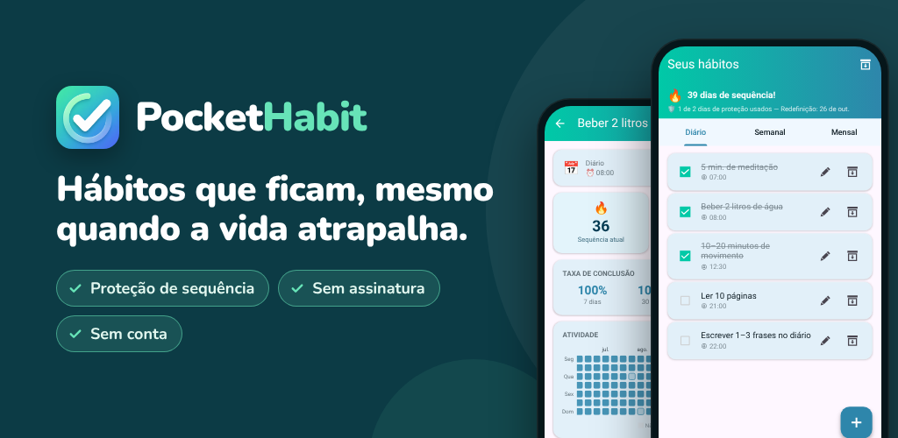

PocketHabit: Hábitos e rotinas
Rastreador de hábitos com proteção de sequência, flexível e sem assinatura.
Google PlayQuer criar hábitos melhores, mas a vida sempre atrapalha? O PocketHabit é o rastreador de hábitos que dá espaço para você ser humano.
FEITO PARA INICIANTES
Sem configuração complicada. Sem conta. Sem assinatura. É só abrir o app, adicionar seu primeiro hábito e começar. Uma introdução rápida deixa você pronto em menos de um minuto.
COMO FUNCIONA
- Adicione seus primeiros hábitos – ou escolha entre as sugestões prontas da introdução
- Marque cada um com um só toque
- Veja sua sequência crescer – a proteção de sequência cobre os dias que não saem como planejado
NINGUÉM É PERFEITO
A exclusiva proteção de sequência do PocketHabit entende que mudanças reais levam tempo. Se você perder um dia, sua sequência não quebra na hora – você tem uma margem que ajuda a voltar aos trilhos. Você decide o quanto quer ser rigoroso:
- Iniciante: 2 dias perdidos por semana permitidos
- Fácil: 1 dia perdido por semana
- Normal: 1 dia perdido a cada 14 dias
- Difícil: 1 dia perdido por mês
Evolua no seu ritmo – e, quando estiver pronto, aumente a dificuldade.
TODOS OS SEUS HÁBITOS EM UM SÓ APP
Sejam rotinas diárias, tarefas semanais ou metas mensais – o PocketHabit cuida de tudo:
- Diário: rotina matinal, exercícios, beber água
- Semanal: escolha dias específicos da semana
- Mensal: uma data fixa ou, por exemplo, "toda 2ª segunda-feira do mês"
LEMBRETES QUE FUNCIONAM PARA VOCÊ
Em vez de configurar um lembrete para cada hábito, ative um único lembrete diário global. Abra o app e marque tudo de uma vez. Uma rotina pode ser simples assim. Prefere horários individuais? Cada hábito também pode ter seu próprio lembrete.
SEU APP, SEU VISUAL
Escolha entre vários temas de cores e alterne entre o modo escuro e o modo claro. Um app que você gosta de abrir todos os dias ajuda você a manter a constância.
ESTATÍSTICAS QUE MOTIVAM
Veja num relance como foram esta semana e este mês. A visualização detalhada mostra um mapa de calor das suas conclusões, a taxa de conclusão e sua melhor sequência pessoal.
- Calendário mensal: cada dia ganha uma cor de acordo com quanto você concluiu
- Visão por dia da semana: veja em quais dias você vai melhor
- Taxas de conclusão dos últimos 7, 30 e 90 dias
CONQUISTAS QUE MOTIVAM
30 conquistas recompensam seu progresso: sua primeira sequência de 7 dias, semanas e meses perfeitos e até a sua volta depois de uma pausa.
SUA DOSE DIÁRIA DE MOTIVAÇÃO
Cada dia começa com uma folha nova do seu calendário de destacar – uma das 240 frases curtas que ajudam você a seguir em frente.
SEUS DADOS, SOB SEU CONTROLE
- Exporte seus hábitos como arquivo de backup e restaure-os em um celular novo
- Pause hábitos no arquivo – as estatísticas deles são mantidas
PARA QUEM É ESTE RASTREADOR DE HÁBITOS?
Para quem quer começar pequeno e manter a constância – seja beber mais água, ler toda noite, treinar três vezes por semana ou manter a casa arrumada. Principalmente se algum app de hábitos rígido demais já fez você desistir depois de um único dia perdido.
PREMIUM: PAGUE UMA VEZ, APROVEITE PARA SEMPRE
Sem assinatura. Sem mensalidades. Faça o upgrade uma vez e aproveite para sempre:
- Totalmente sem anúncios
- Acesso a todos os temas
- Histórico de estatísticas de mais de 2 anos (em vez de 6 meses)
- Proteção de sequência sem assistir a anúncios
- Todos os recursos Premium futuros incluídos
FEITO COM OS USUÁRIOS, PARA OS USUÁRIOS
O PocketHabit cresce com você. Novos recursos só são desenvolvidos quando usuários reais realmente os querem. Sua opinião importa – fale com a gente e ajude a melhorar o app.
Privacidade: todos os dados dos seus hábitos ficam no seu dispositivo. Não é preciso ter conta.
Baixe agora e dê o primeiro passo rumo à melhor versão de você.